Resumen y enlaces del proyecto
1. Problema y contexto
2. Objetivos y alcance
3. Análisis y modelo del dominio
4. Arquitectura y tecnologías
5. Implementación
6. Pruebas y validación
7. Resultados y conclusiones
Anexo. Documentación de referencia en el repositorio
Vitalys App es una aplicación web responsive para gestionar un centro que combina un gimnasio con consultorios de Nutrición, Psicología y Kinesiología. Unifica en una sola plataforma la identidad de socios y pacientes, la agenda de turnos de ambos servicios, el registro de pagos con control de morosidad y las notificaciones por correo electrónico. Está construida con una API REST en Spring Boot (Java 17), un frontend en React con TypeScript y una base de datos PostgreSQL, desplegados en la nube sobre Render, Vercel y Supabase.
El sistema implementa los seis módulos comprometidos en la propuesta (RFC-001) y agrega, como cambios de alcance registrados, el panel de inicio del administrador ("Hoy en el centro"), los avisos de deuda y la función "Operar como", que permite a Recepción atender a un socio en el mostrador con una sesión acotada y auditada. Las reglas críticas del dominio (no superposición de turnos, cupo del gimnasio, morosidad, unicidad de pagos) se garantizan en la base de datos y en la capa de servicio, y están cubiertas por pruebas automatizadas que se ejecutan en integración continua con un umbral mínimo de cobertura del 90 %.
| Recurso | Enlace |
|---|---|
| Aplicación (frontend) | https://vitalys-app-ayk2.vercel.app |
| API (backend) | https://vitalys-backend-039u.onrender.com |
| Documentación de la API (Swagger UI) | https://vitalys-backend-039u.onrender.com/swagger-ui/index.html |
| Repositorio | https://github.com/rcalcatelli/vitalys-app |
| Video final | https://youtu.be/LeFzBQFSr7M |
db/dml/seed.sql. El plan gratuito de Render suspende el backend tras un período sin tráfico, por lo que la primera solicitud puede demorar cerca de un minuto mientras el servicio arranca.Los centros que combinan actividad deportiva con prestaciones de salud tienen dos servicios bajo el mismo techo cuyos datos, en general, no se comunican. En los establecimientos chicos esto toma la forma de herramientas desconectadas: planillas de socios, agendas en papel o por WhatsApp para cada profesional y cobros anotados en un cuaderno o en Excel. En los establecimientos grandes, que sí cuentan con un sistema propio, el problema no desaparece sino que cambia de forma: el gimnasio y la prestación de salud conviven en la misma plataforma, pero sus datos no se cruzan.
Las consecuencias son concretas: personas registradas dos veces (como socio y como paciente) con datos inconsistentes, turnos superpuestos o perdidos, pagos sin trazabilidad, deudas que nadie detecta a tiempo y una recepción saturada de tareas manuales y consultas telefónicas. Para el negocio esto se traduce en ingresos no cobrados y en decisiones tomadas sin información confiable.
| Actor | Rol en el proceso actual | Necesidad principal |
|---|---|---|
| Socio / paciente | Asiste al gimnasio, a consultorios o a ambos; muchas veces figura como dos personas distintas. | Reservar y cancelar turnos sin depender del horario de recepción y conocer su estado de cuenta. |
| Profesional (Nutrición, Psicología, Kinesiología) | Administra su agenda de forma aislada. | Ver su agenda del día, cargar su disponibilidad y registrar asistencia sin superposiciones. |
| Recepción / administración | Centraliza cobros, turnos y consultas; es el cuello de botella operativo. | Reducir tareas repetitivas y errores de registro; atender en el mostrador a quien no usa la aplicación. |
| Dueño / encargado | Supervisa ingresos y actividad. | Información consolidada del día y de los socios con deuda. En el MVP opera con el rol de administración. |
A pedido de la tutora en la revisión de la primera entrega, el equipo trabajó con dos fuentes de evidencia complementarias, con distinto peso metodológico:
docs/01-propuesta/relevamiento/entrevista-jerarquicos.md. El establecimiento autorizó verbalmente que se lo nombre.perfiles-usuario.json) y no se presentan como testimonio de personas reales.El relevamiento mostró que el establecimiento usa un sistema desarrollado a medida, con acceso web y móvil, en el que el socio reserva el gimnasio y, con la misma cuenta, pide turnos de consultorio. Aun así, lo que el propio centro señala como pendiente es integrar los datos del gimnasio con los de la prestación de salud. Este hallazgo es relevante porque indica que el problema no se resuelve solo con tener software: persiste incluso en un establecimiento con sistema propio.
Más allá de confirmar el problema, el relevamiento obligó a cambiar reglas que el equipo había definido sin evidencia. Los hallazgos más importantes y su efecto sobre el diseño fueron:
| # | Hallazgo | Efecto en Vitalys |
|---|---|---|
| 7 | El centro tolera hasta 6 meses de deuda antes de suspender; mientras tanto el socio sigue ingresando y recibe avisos. | Se reescribió la regla de morosidad (RN-01) con un umbral configurable y un estado intermedio "con deuda" que no bloquea (migración V6). |
| 11 | Cancelar libera el lugar para otra persona; solo lo retiene cancelar con la franja ya iniciada. | RN-02 y RN-03 pasaron a definir la ocupación por el momento de la cancelación, con una única función compartida por los controles de la base (V8). |
| 10 / 5 | El profesional informa ausencias por un período; no estaba definido qué pasa con los turnos ya tomados. | Cancelación en cascada con vista previa del impacto, confirmación y aviso a cada paciente (RN-24). |
| 4 | Faltaba la fecha de inicio de la membresía: un socio nuevo podía aparecer como moroso desde el primer día. | Columna fecha_inicio_membresia (V4). |
| 2 / 3 | No se podía consultar el cupo de una franja de gimnasio ni estaba definido quién registra la asistencia. | Grilla horaria con cupo por franja y check-in a cargo de Recepción (Decisión de dominio 11). |
| 8 / 9 | El cobro real es por débito automático y el turno de gimnasio incluye la actividad. | Registrados como divergencias conscientes respecto del alcance del MVP (ver sección 2.4). |
El relevamiento también confirmó decisiones previas: la identidad única socio-paciente sobre una sola cuenta, que la suspensión por deuda del gimnasio no alcance a la prestación de salud, que el profesional se limite a registrar la asistencia sobre su agenda y que el aviso de deuda deba preceder al bloqueo.
Contar con una única plataforma, diseñada para el modelo híbrido, en la que cada persona exista una sola vez con su historial de turnos y pagos; en la que el sistema, y no la memoria de un operador, impida las superposiciones y condicione la reserva del gimnasio al estado de cuenta; y en la que el socio pueda autogestionar sus turnos las 24 horas, descomprimiendo a la recepción sin reemplazarla.
Desarrollar y desplegar en la nube una aplicación web que centralice la gestión de personas, profesionales, turnos de gimnasio y de consultorio, pagos y notificaciones de un centro de salud híbrido, haciendo cumplir de forma automática las reglas de negocio del dominio.
| Módulo | Funcionalidad implementada | Estado |
|---|---|---|
| 1. Autenticación y roles | Registro público con rol forzado a socio/paciente; login por email o DNI; JWT; tres roles (ADMIN, PROFESIONAL, SOCIO_PACIENTE) con control de acceso en la capa de servicio. | Completo |
| 1b. Operar como | Recepción opera en nombre de un socio con una credencial de 30 minutos, auditada y visible para el socio. | Completo (cambio de alcance) |
| 2. Personas | Alta, modificación, baja lógica y reactivación; vínculo de la ficha con un usuario ya registrado; DNI único; columna de cuota y filtro de deuda. | Completo |
| 3. Profesionales y disponibilidad | ABM con baja lógica en dos pasos; franjas semanales sin solapamiento; cancelación en cascada con vista previa del impacto al reducir la disponibilidad. | Completo |
| 4. Agenda de turnos | Gimnasio: grilla, cupo por franja, un turno por día, feriados oficiales, anticipación de 1 hora a 7 días, check-in y ausentes automáticos. Consultorio: turnos según la disponibilidad del profesional y agenda del día. Cancelación con estado según la anticipación. Excepciones de morosidad autorizadas por el ADMIN. | Completo |
| 5. Pagos | Cuotas mensuales y sesiones de consultorio con medio de pago; estado de cuenta (pagado, impago, pendiente) con 10 días de gracia; regla de morosidad compartida con la reserva. | Completo |
| 6. Notificaciones | Confirmación, cancelación, recordatorio 24 h antes y avisos de deuda y suspensión, por la API de Brevo, con un reintento y alerta en el panel del ADMIN si falla. | Completo |
| Panel "Hoy en el centro" | Inicio del ADMIN: quién está en el gimnasio, turnos y consultas del día, ocupación por franja, socios que requieren atención y notificaciones fallidas. | Completo (cambio de alcance) |
Además, la interfaz sigue el prototipo de diseño elaborado para el proyecto: shell común con barra lateral en escritorio y barra de pestañas en el celular, modo oscuro persistente, pantalla de inicio del socio y pantalla de Ingreso al gimnasio. Los desvíos deliberados respecto del prototipo están documentados con su motivo en docs/02-diseno/wireframes.md.
Todo cambio de alcance se registró en el RFC-001 mediante Pull Request, como se había acordado con la tutora. "Operar como" quedó asentado como Decisión de dominio 12, con su fundamento y sus límites (ver sección 4.5).
| Funcionalidad | Motivo |
|---|---|
| Ficha clínica digital | Implica almacenar datos de salud (Ley 25.326) con exigencias de resguardo, retención y acceso que exceden un trabajo académico. Por minimización, el sistema no guarda diagnósticos ni motivos de consulta. |
| Pasarela de pago y débito automático | El relevamiento mostró que el cobro real es automático (hallazgo 8), pero integrar un procesador de pagos es un módulo en sí mismo. Los cobros se registran a mano con su medio, y el tipo medio_pago admite sumar Mercado Pago con una migración propia. |
| Pagos parciales, packs y planes | Introducen saldos, imputación y estados intermedios de deuda; el objetivo del MVP es la trazabilidad del pago, no una cuenta corriente (Decisión 6). |
| Actividad dentro del turno de gimnasio y clases grupales | El turno de gimnasio modela una franja con cupo (hallazgo 9). Agregar actividades exige otro modelo de cupos. |
| Reportes de ingresos y ocupación | Estaban como "nice to have" y se descartaron para priorizar los seis módulos. El panel "Hoy en el centro" cubre la información operativa del día. |
| Recuperación de contraseña por email | Ningún requerimiento la contemplaba. La pantalla existe y lo informa con claridad; la contraseña se restablece en el centro. |
| Varios roles por usuario | Un profesional que además es socio necesita dos cuentas. Es una limitación de diseño documentada (Decisión 8): el caso no apareció como frecuente. |
| Aplicaciones nativas | La aplicación web es responsive y cubre el uso desde el celular. |
| Listados generales de pagos | Los endpoints GET /api/pagos y GET /api/pagos/{id} se difirieron: el estado de cuenta por persona cubre la consulta necesaria. |
| Entidad (tabla) | Responsabilidad |
|---|---|
usuarios | Credenciales (email y hash bcrypt), rol único y estado habilitado. |
personas | Identidad única del socio/paciente: DNI único, estado ACTIVO/INACTIVO con fecha de baja, si es socio del gimnasio y desde cuándo. |
profesionales | Especialidad, duración del turno por profesional y baja lógica. |
disponibilidad_profesional | Franjas semanales (día, hora de inicio y de fin) de cada profesional. |
turnos | Reservas de gimnasio y de consultorio en una sola tabla, con tipo, inicio, fin, estado, quién reservó, quién y cuándo canceló, y hora real del check-in. |
pagos | Cuota mensual (con período) o sesión de consultorio (con turno), monto, medio de pago y quién lo registró. |
excepciones_morosidad | Autorizaciones puntuales del ADMIN para que un socio suspendido pueda reservar el gimnasio. |
notificaciones | Registro de cada correo: tipo, destinatario, resultado y, en los avisos de deuda, el período avisado. |
feriados y configuracion_gym | Días en que el gimnasio no abre (sincronizados con el calendario oficial) y parámetros: cupo por franja y meses de tolerancia de morosidad. |
auditoria_operar_como | Inicio, fin y cada reserva o cancelación hechas durante "Operar como". Solo se inserta. |
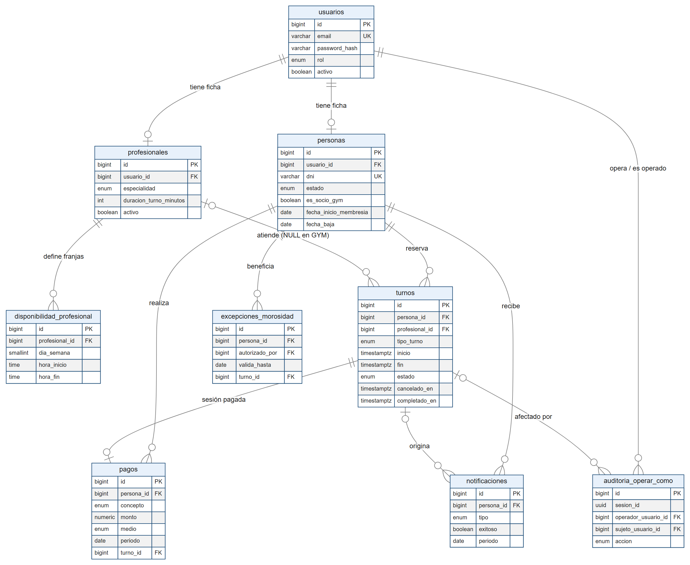
docs/02-diseno/diagrama-er.mermaid y el detalle de cada columna en el diccionario de datos.| Regla | Descripción | Dónde se garantiza |
|---|---|---|
| RN-01 | Morosidad del gimnasio. Se recorren mes a mes los períodos desde el inicio de la membresía; cada período cuenta como impago si pasaron 10 días de su vencimiento sin cuota, aunque se hayan pagado meses posteriores. Con al menos un impago el socio queda "con deuda" pero conserva el acceso; al alcanzar el umbral configurable (6) queda suspendido y no puede reservar el gimnasio. Nunca bloquea un turno de consultorio. | Servicio (MorosidadService), compartido por la reserva y el estado de cuenta |
| RN-02 / RN-03 | Cancelación y ocupación del lugar. El estado registra la anticipación del aviso (24 h en consultorio, 2 h en gimnasio). Lo que decide si el lugar se libera es el momento: toda cancelación anterior al inicio libera el lugar; una vez iniciada la franja, queda ocupado. La cancelación tardía no se cobra. | Base de datos (fn_turno_ocupa_lugar) y servicio |
| RN-22 | Sin superposiciones. Un profesional no puede tener dos turnos que se pisen, y una persona tampoco, aunque sean de distinto tipo. | Base de datos (restricciones EXCLUDE USING GIST) |
| RN-14 a RN-17 | Gimnasio. Franjas de 60 minutos en punto (lunes a viernes de 7 a 21, sábados de 9 a 12), cupo por franja, un turno por persona y por día, solo socios activos y sin feriados. | Base de datos (trigger con bloqueo) y servicio |
| RN-18 | Anticipación de la reserva de gimnasio: como máximo 7 días antes y como mínimo 1 hora antes. | Servicio (depende de la hora actual) |
| RN-05 a RN-07, RN-20 | Pagos. Una cuota por persona y período; un pago por turno; la cuota lleva período y la sesión lleva turno; solo se paga una sesión de consultorio a nombre de la persona del turno. | Base de datos (índices únicos parciales, CHECK y trigger) |
| RN-08 / RN-19 / RN-28 | Asistencia. El profesional marca atendido desde 15 minutos antes del inicio y ausente desde el inicio. En el gimnasio lo hace Recepción en el check-in, y si nadie lo marca el turno pasa a ausente al cerrar la franja. Se guarda la hora real del ingreso. | Servicio y tarea programada |
| RN-09 / RN-23 | Excepciones de morosidad autorizadas por el ADMIN, de un solo uso o por período, solo para socios suspendidos. | Servicio y base de datos |
| RN-24 / RN-25 | Reducción de disponibilidad o baja del profesional: los turnos futuros que quedan afuera se cancelan en cascada, con vista previa del impacto, confirmación explícita y aviso al paciente. | Servicio |
| RN-26 / RN-27 | Operar como: credencial acotada y revocable; toda escritura queda auditada en la misma transacción. | Filtro de seguridad, servicio y base de datos |
personas, vinculada a un usuario, con su historial completo de cuotas y turnos. Es el núcleo de la propuesta de valor y el relevamiento lo confirmó como un caso frecuente.usuarios guarda la autenticación; personas y profesionales guardan los datos del dominio. Esto permite que alguien se registre solo y que luego Recepción vincule su ficha por email, sin crear credenciales nuevas (RF-31).profesional_id nulo) y se rige por cupo; el de consultorio depende de la disponibilidad del profesional. Compartir la tabla permite que una misma restricción impida que una persona tenga dos turnos superpuestos de distinto tipo, mientras que las validaciones propias de cada circuito siguen separadas.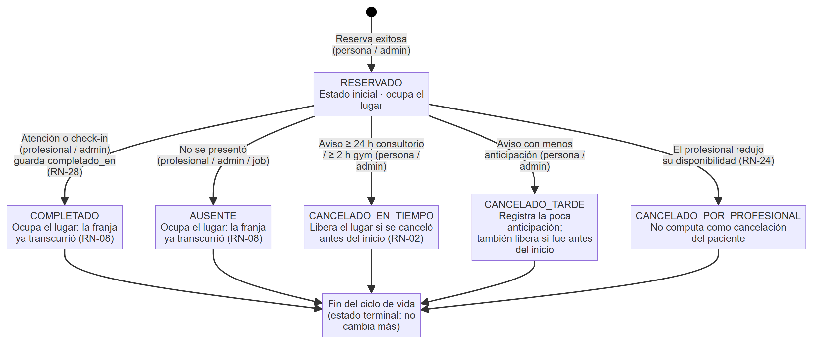
El repositorio incluye además el diagrama de casos de uso, el de clases del dominio y los diagramas de secuencia de cada flujo principal (reserva de consultorio y de gimnasio, cancelación, reducción de disponibilidad, registro público, vínculo de fichas, excepciones de morosidad y "Operar como") en docs/02-diseno/diagramas.md.
La solución sigue una arquitectura cliente-servidor de tres capas. El frontend es una aplicación de una sola página (SPA) que consume una API REST con JSON. El backend está organizado en capas (Controller → Service → Repository): los controladores exponen los endpoints y validan la entrada, los servicios concentran las reglas de negocio y el control de acceso por rol, y los repositorios acceden a la base con Spring Data JPA. La base de datos PostgreSQL es, además de almacenamiento, la última línea de defensa de las reglas críticas.
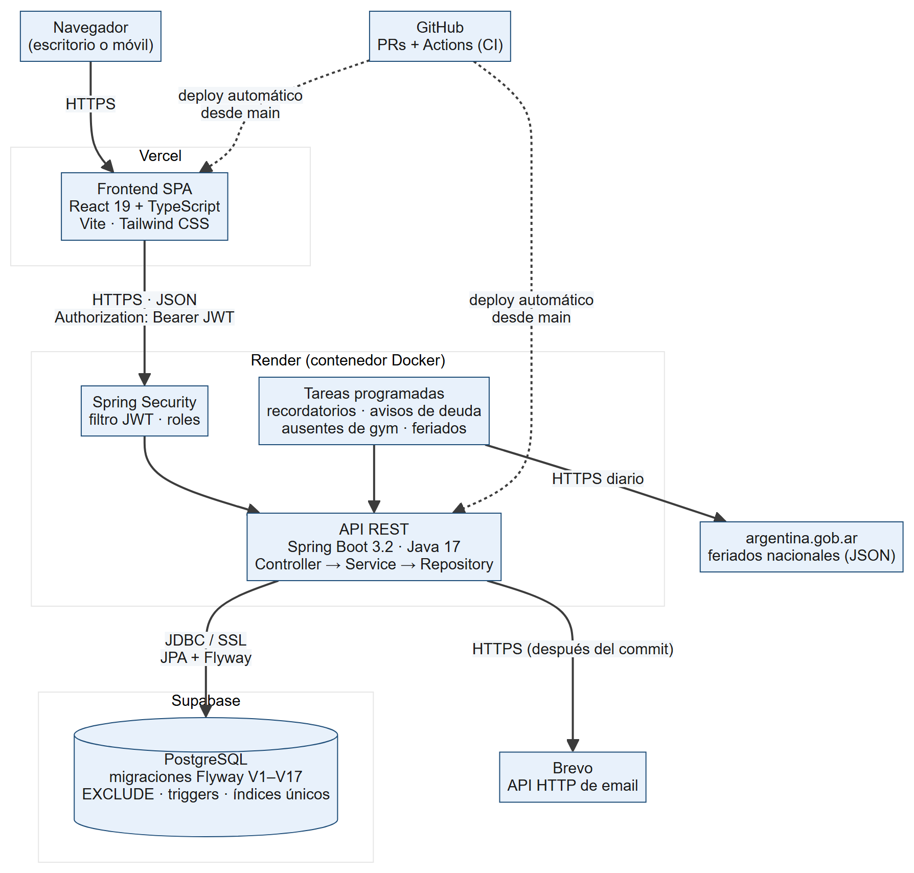
| Componente | Tecnología | Responsabilidad | Por qué se eligió |
|---|---|---|---|
| Frontend | React 19 + TypeScript, Vite, React Router, Tailwind CSS | Interfaz por rol, navegación, formularios, estados de carga y error; nunca decide una regla de negocio. | Estándar de la industria, con el que el equipo ya trabajó; el tipado estático reduce errores al consumir la API. |
| Backend | Java 17, Spring Boot 3.2, Spring Web, Spring Data JPA, Bean Validation | API REST, reglas de negocio, transacciones, tareas programadas e integraciones. | Trabajado en profundidad en Programación III. Se priorizó una tecnología conocida para invertir el tiempo en el producto y no en aprender un framework con fecha de entrega fija. |
| Seguridad | Spring Security, JWT (jjwt), bcrypt | Autenticación sin estado, autorización por rol y la credencial acotada de "Operar como". | Integración nativa con Spring; JWT permite un backend sin sesión en el servidor, adecuado para un PaaS que reinicia el contenedor. |
| Base de datos | PostgreSQL (Supabase) con Flyway | Persistencia, integridad referencial, exclusión de solapamientos, cupos y unicidad. | El dominio es fuertemente relacional y transaccional. Se comparó con MongoDB en el RFC-002: las garantías que se necesitaban (exclusión por rangos de tiempo, transacciones) son nativas en PostgreSQL. |
| Documentación de la API | springdoc-openapi (Swagger UI) | Contrato navegable de todos los endpoints. | Se genera desde el código, por lo que no se desactualiza. |
| Despliegue | Render (backend en Docker), Vercel (frontend), Supabase (base) | Servir la aplicación por HTTPS con despliegue automático desde la rama principal. | Planes gratuitos suficientes para la escala del problema y sin administración de servidores. Render no ofrece un entorno nativo de Java, por eso el backend se publica como imagen Docker, la misma que se usa en local. |
| Entorno local | Docker Compose | Levantar PostgreSQL y el backend con un comando y cargar los datos de prueba. | Evita instalar Java, Maven y PostgreSQL a mano y asegura el mismo entorno para ambos integrantes. |
| Calidad e integración continua | JUnit 5, Mockito, Testcontainers, JaCoCo, Vitest, Testing Library, GitHub Actions | Pruebas unitarias y de integración contra un PostgreSQL real, umbral de cobertura y verificaciones de la documentación en cada Pull Request. | Las reglas críticas viven en la base, así que solo una base real (Testcontainers) prueba que se cumplen. |
NotificadorEmail, con una implementación que solo registra en el log para desarrollo y pruebas. Envía las confirmaciones, cancelaciones, recordatorios y avisos de deuda.feriados; el gimnasio no abre los feriados inamovibles ni los trasladables en su fecha corrida. El ADMIN puede además cargar cierres propios y forzar la sincronización./api/health qué commit está corriendo, lo que permite detectar un frontend nuevo hablando con un backend viejo.mvn verify con umbral de cobertura) y frontend (compilación y pruebas con umbral).Authorization. Todos los endpoints, salvo registro, login, health y la documentación, requieren un token válido; un token vencido, malformado o con firma inválida responde 401.rol, se rechaza con 400 antes de crear nada.example.com, que nunca entrega mensajes.Es la decisión de seguridad más sensible del proyecto, porque Recepción actúa en nombre de un socio. La Decisión 5 del RFC ya admitía que la administración reservara y cancelara por una persona; lo nuevo es la forma. En lugar de duplicar en endpoints de ADMIN las reglas del socio, el ADMIN obtiene una credencial cuyo sujeto es el socio y cuyo actor es el ADMIN (claim act, RFC 8693). Así el sistema le aplica exactamente las mismas reglas que al socio (morosidad, un turno por día, anticipación) y el backend sigue siendo la única autoridad. Los límites son:
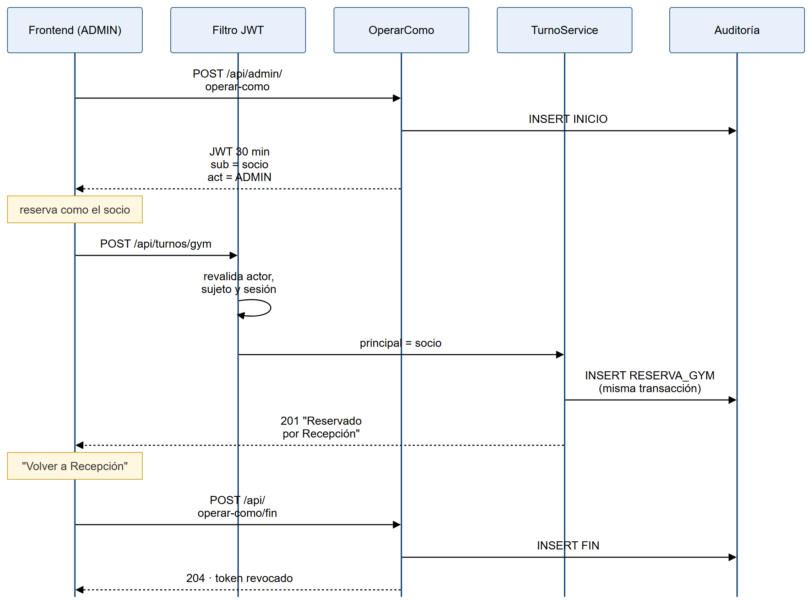
EXCLUDE USING GIST sobre rangos de tiempo hacen imposible que dos turnos superpuestos queden confirmados: si dos personas reservan a la vez, la base acepta una y rechaza la otra (409).pg_advisory_xact_lock por franja, lo que serializa solo las reservas de esa misma franja sin bloquear al resto.Clock inyectado en la zona de Buenos Aires; las reglas que dependen de "ahora" se prueban de forma determinista fijando el reloj.Se trabajó con un modelo incremental y marco Scrum, en cinco sprints de dos semanas y una etapa de cierre, según la planificación elaborada en Metodología de Sistemas I. Ambos integrantes trabajaron sobre todo el stack: cada módulo tuvo un responsable primario que lo llevó de punta a punta (modelo de datos, endpoint e interfaz) y el otro revisó el Pull Request. Ningún cambio se integró sin revisión y sin la integración continua en verde. El seguimiento se hizo con Issues y Pull Requests en GitHub, y el estado real de cada tarea está en docs/metodologia/plan-sprints.md.
| Sprint | Período | Resultado |
|---|---|---|
| Sprint 1 | 31/08 – 13/09 | Esquema inicial, proyectos Spring Boot y React, despliegue en Render y Vercel. |
| Sprint 2 | 14/09 – 27/09 | Autenticación y roles con JWT; segunda entrega (esquema de base de datos y módulos). |
| Sprint 3 | 28/09 – 11/10 | Personas y Profesionales con disponibilidad; relevamiento de campo y ajustes de reglas. |
| Sprint 4 | 12/10 – 25/10 | Agenda de turnos de gimnasio y de consultorio, excepciones de morosidad. |
| Sprint 5 | 26/10 – 08/11 | Pagos, notificaciones, avisos de deuda, panel "Hoy en el centro", interfaz según el diseño y "Operar como". |
| Cierre | 09/11 – 14/11 | Estabilización, prueba sobre el despliegue, informe, video y preparación de la defensa. |
Durante el desarrollo se utilizaron herramientas de inteligencia artificial como asistente técnico, conforme a los lineamientos de la cátedra: para revisar la consistencia del alcance, contrastar alternativas, explorar casos borde del dominio y asistir en la escritura de código y pruebas. Las decisiones de alcance, de diseño y de tecnología fueron analizadas y tomadas por el equipo, y todo el código pasó por revisión y por la integración continua.
| Módulo | Backend (clases principales) | Frontend (pantallas) |
|---|---|---|
| Autenticación | AuthService, JwtService, JwtAuthenticationFilter, SecurityConfig | Login, Registro, Recuperar contraseña (informativa) |
| Operar como | OperarComoService, OperarComoAutenticador, OperarComoInterceptor, AuditoriaOperarComoService | Acción en Personas y banner persistente en el shell |
| Personas | PersonaService, PersonaSpecifications | Personas (ADMIN), con filtros, cuota y menú de acciones |
| Profesionales | ProfesionalService, DisponibilidadService, CascadaDisponibilidadService, ImpactoCalculator | Profesionales, Disponibilidad |
| Turnos | TurnoService, MorosidadService, ExcepcionMorosidadService, JobAusentesGym, SincronizadorFeriados | Inicio del socio, Reservar gimnasio, Turno de consultorio, Mis turnos, Agenda del profesional, Ingreso al gimnasio |
| Pagos | PagoService | Pagos (ADMIN) con modal de registro, Estado de cuenta (socio) |
| Notificaciones | AvisosTurnoService, AvisosDeudaService, DespachadorNotificaciones, BrevoNotificadorEmail, JobRecordatorios, JobAvisosDeuda | Notificaciones fallidas en "Hoy en el centro" |
| Panel del ADMIN | ResumenHoyService | Hoy en el centro |
El frontend está organizado con diseño atómico (átomos, moléculas, organismos, plantillas y páginas), un cliente HTTP mínimo que adjunta el token, un contexto de autenticación, un contexto de tema y un guard de rutas por rol.
El socio elige día y franja. El servicio valida la anticipación, consulta el veredicto de morosidad y, si el socio está suspendido sin excepción vigente, responde 422 con un mensaje que explica el motivo. Si puede reservar, inserta el turno; la base valida grilla, feriados, cupo, un turno por día y superposición. Con la reserva aceptada se registra la notificación en la misma transacción y el correo de confirmación se envía después del commit.
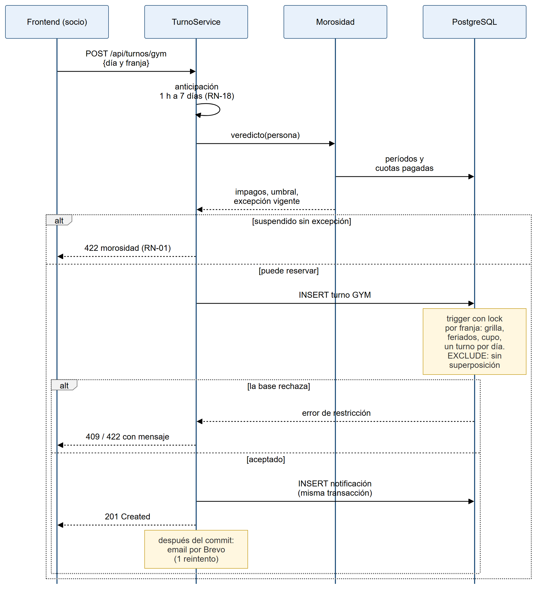
Las siguientes capturas se tomaron de la aplicación ejecutándose con los datos de demostración del repositorio.
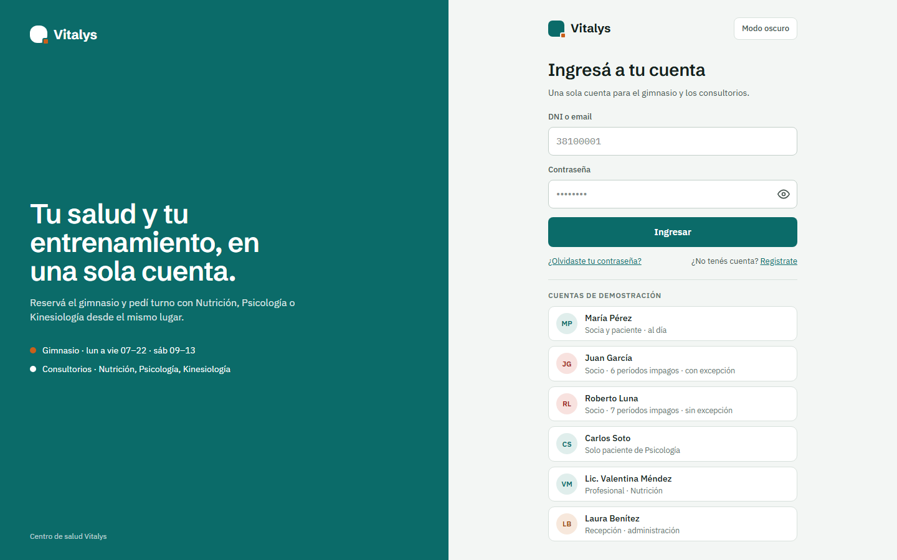
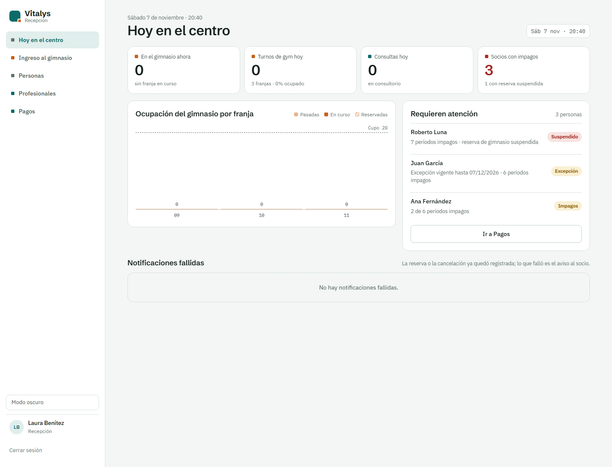
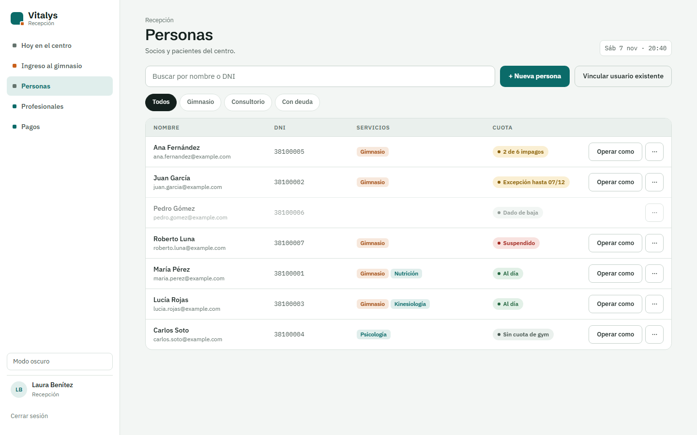
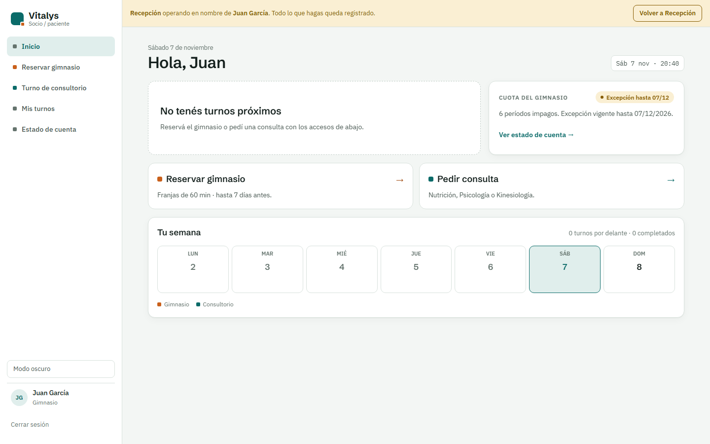
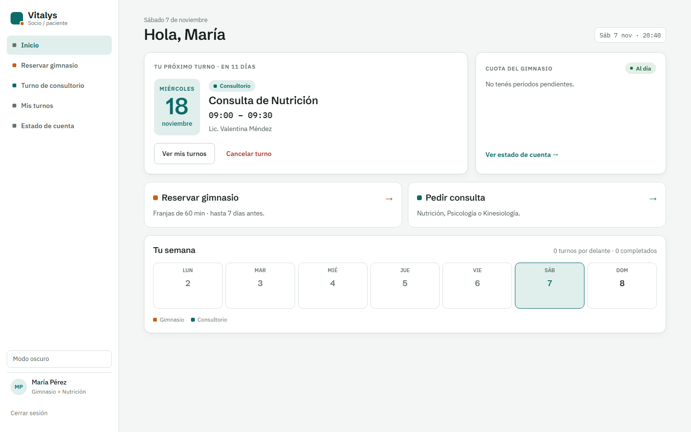
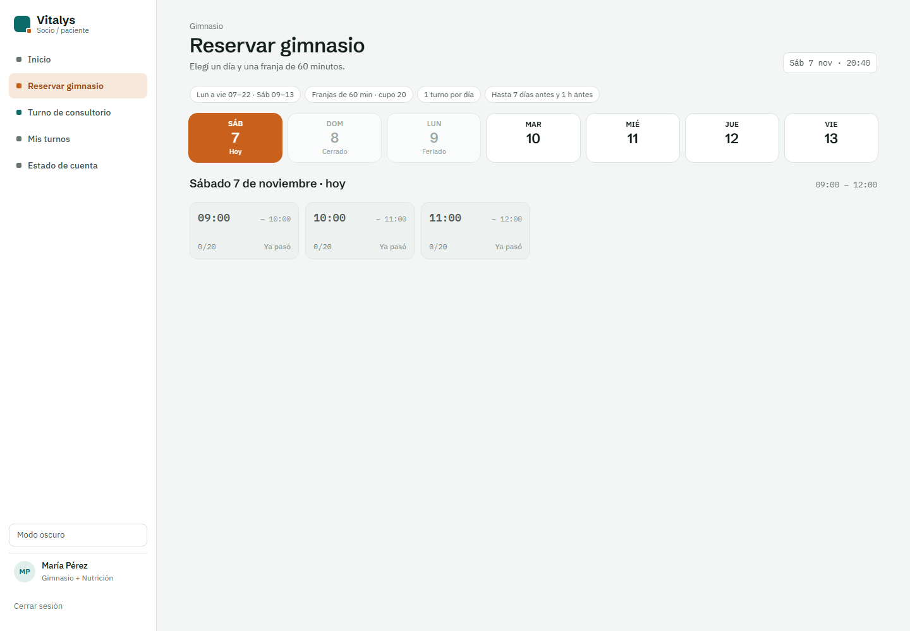
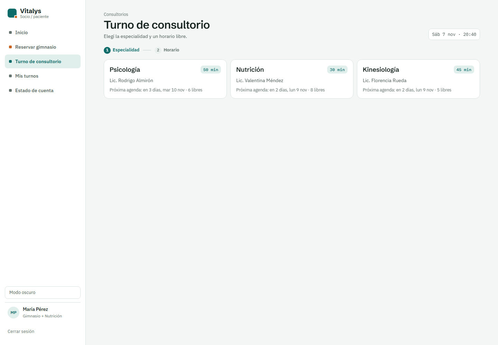
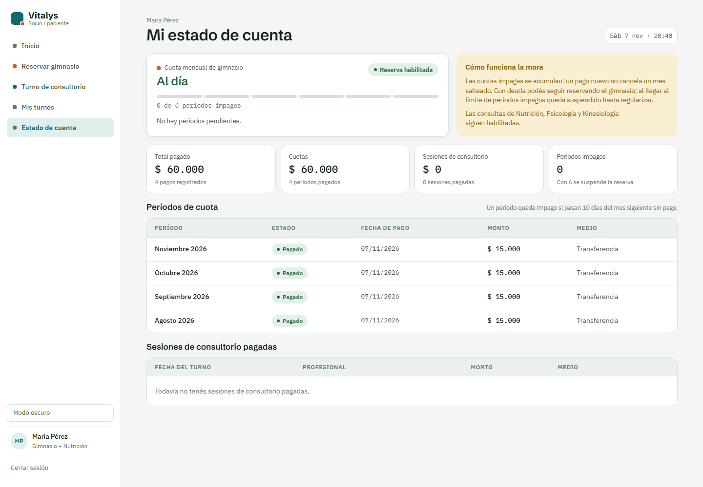
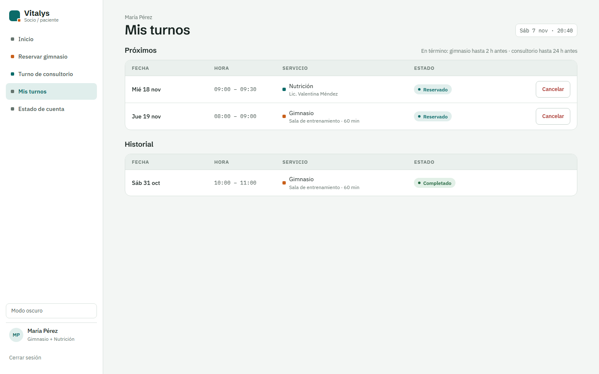
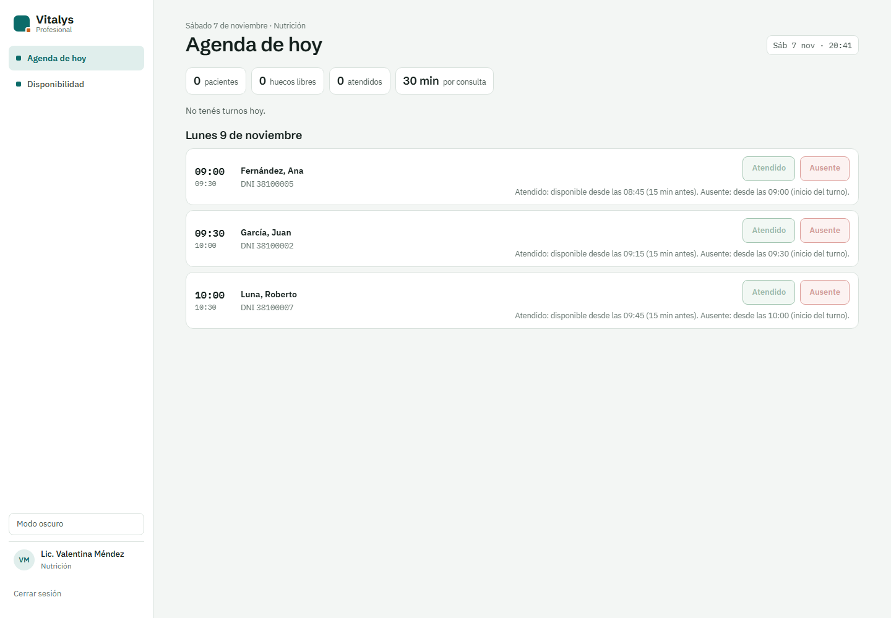
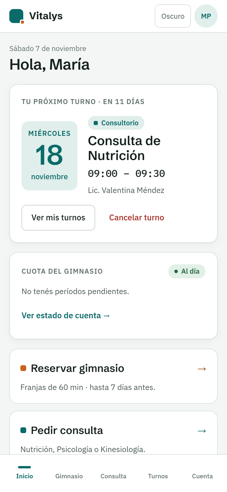
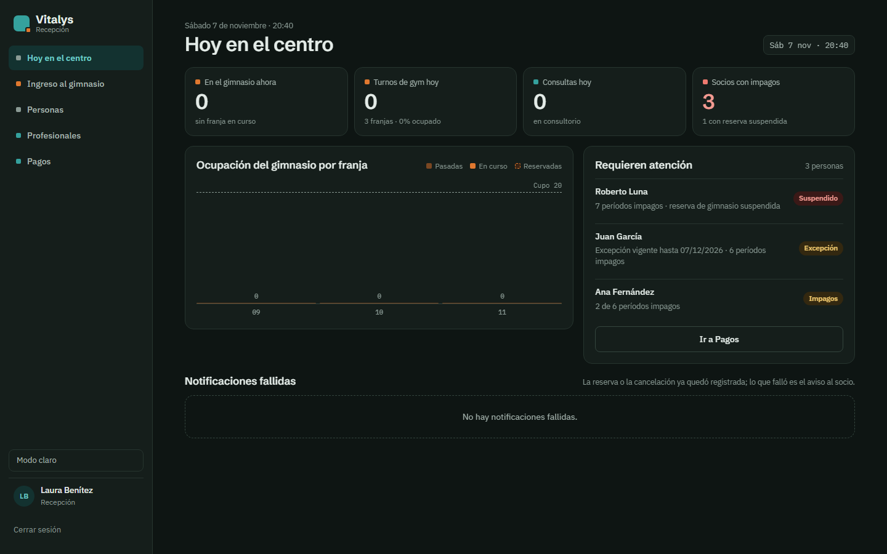
| Dificultad | Solución |
|---|---|
| Hibernate envía los enumerados como texto y PostgreSQL rechaza ese parámetro contra sus tipos ENUM nativos, por lo que el mapeo JPA fallaba. | Mapeo con @JdbcTypeCode(SqlTypes.NAMED_ENUM). Se registró como riesgo (RG-13) con su solución verificada. |
| Condición de carrera en el cupo del gimnasio: dos reservas simultáneas podían superar el cupo. | Bloqueo transaccional por franja (pg_advisory_xact_lock) dentro del trigger. |
| La regla de ocupación del lugar era inconsistente: la base retenía el lugar de una cancelación tardía en consultorio y lo liberaba en gimnasio. | Una única función fn_turno_ocupa_lugar, usada por los tres controles del motor (V8), alineada con el hallazgo del relevamiento. |
| Testcontainers no lograba comunicarse con Docker en Windows a través de los named pipes; más adelante, Docker 29 rompió la compatibilidad de la versión usada. | Ejecución de las pruebas de integración dentro de WSL, documentada en setup-wsl-testcontainers.md; luego, actualización de Testcontainers a 1.21.4. |
| Render no tiene un entorno nativo de Java, y el backend no arrancaba en producción ("Failed to configure a DataSource"). | Publicación como imagen Docker, construida desde la raíz del repositorio para incluir las migraciones, y definición explícita del perfil prod, que era el que leía la URL de la base. |
| Tras un merge, el frontend nuevo consumió un backend todavía no redesplegado y la pantalla de Personas quedó en blanco. | El frontend tolera respuestas sin los campos nuevos y el backend informa en /api/health el commit desplegado, para detectar la desincronización. |
| Las tareas programadas no corren si Render durmió el proceso (RG-14). | La tarea de ausentes procesa todos los turnos vencidos cada vez que corre, así que al despertar se pone al día; además se precalienta el servicio antes de las demostraciones. |
| Enviar el correo dentro de la transacción podía notificar reservas que luego se revertían, o bloquear la reserva si el proveedor fallaba. | La notificación se persiste en la transacción y se envía después del commit, con un reintento y alerta al ADMIN si falla definitivamente. |
| Las reglas que dependen de la fecha actual hacían que las pruebas y los datos de demostración envejecieran. | Reloj inyectado en las pruebas y datos de demostración con fechas relativas al día de la carga. |
| Los socios del seed usaban un dominio de correo real, y con el proveedor activo podían recibir mensajes personas ajenas al proyecto. | Paso al dominio reservado example.com, que nunca entrega correos. |
El plan de pruebas (docs/metodologia/definicion-pruebas.md) tiene tres niveles, y cada caso tiene un identificador que también figura en el nombre del método que lo prueba (por ejemplo, pi09_…), para que la trazabilidad entre documento y código sea directa:
Los aspectos cubiertos son: autenticación y manejo de tokens inválidos; autorización por rol; ABM de personas y profesionales; disponibilidad y cascada; reservas, cancelaciones y estados de turnos; grilla, cupo y feriados del gimnasio; morosidad y excepciones; pagos y estado de cuenta; notificaciones y reintentos; "Operar como"; el panel del ADMIN; y la carga de los datos de demostración.
Las pruebas se ejecutan en GitHub Actions en cada Pull Request, y el build falla si la cobertura de líneas baja del 90 % en el backend (JaCoCo) o en el frontend (Vitest). Ningún cambio se integró con la integración continua en rojo.
| Indicador | Resultado |
|---|---|
| Backend: pruebas unitarias y de integración | 426 unitarias y 201 de integración, todas en verde (CI de la rama principal tras el PR #39). |
| Frontend: pruebas | 704 pruebas en 114 archivos, todas en verde, con 99,46 % de cobertura de líneas (ejecución sobre la rama principal del 07/11/2026). |
| Umbral de cobertura | 90 % de líneas en ambos proyectos, con corte del build si no se alcanza. |
| Estado de la rama principal | Integración continua en verde en el último merge (PR #40, 07/11/2026). |
| Prueba de humo sobre el despliegue | Ejecutada el 27/10/2026 con los tres roles: todo el checklist pasó (ver 6.5). |
| ID | Caso | Resultado esperado y obtenido |
|---|---|---|
| PI-09 | Dos reservas simultáneas del mismo horario de consultorio | Una responde 201 y la otra 409 |
| PI-11 a PI-13 | Cancelación en tiempo, tardía antes del inicio y con la franja ya iniciada | Las dos primeras liberan el lugar (otra persona lo reserva); la tercera lo mantiene ocupado (409) |
| PI-14 / PI-15 | Cupo del gimnasio tras cancelaciones antes y después del inicio | Libera el cupo solo si se canceló antes del inicio |
| PI-10 | Reserva de gimnasio de un socio suspendido sin excepción | 422 con el motivo |
| PI-30 a PI-36, PI-81 a PI-83 | Grilla horaria, cierre a la hora límite y feriados (inamovible, trasladable en su fecha corrida y no laborable) | 422 fuera de grilla o en feriado; 201 en la última franja válida y en días no laborables |
| PU-01 a PU-05, PU-08 a PU-12 | Morosidad: mes salteado con meses posteriores pagados, socio nuevo sin pagos, borde exacto del umbral, umbral leído de la configuración | Impagos y suspensión correctos en cada borde |
| PI-77 / PI-79 | Segunda cuota del mismo mes; segundo pago del mismo turno | 409 por los índices únicos |
| PI-93 / PI-96 | Pago de sesión de un turno de gimnasio, de otra persona o cancelado | 422: la cancelación tardía no genera cobro |
| PI-103 | Estado de cuenta y estado de reserva del gimnasio | Coinciden siempre: es la misma regla |
| PI-18, PI-22 a PI-24 | Registro con rol explícito; JWT vencido, malformado o con firma inválida | 400 sin crear el usuario; 401 |
| PI-117 / PI-119 | Con la credencial de "Operar como", llamar a cada endpoint exclusivo del ADMIN (enumerados desde el mapeo real) o a datos de otro socio | 403 en todos los casos |
| PI-120 | Credencial vencida, actor o sujeto deshabilitado, credencial forjada sin inicio auditado | 401 |
| PI-121 | Reserva suplantada cuando falla la auditoría | No queda el turno: la operación se revierte |
| PI-139 | Reserva de gimnasio con menos de 1 hora o más de 7 días de anticipación | 422; exactamente 1 hora y exactamente 7 días se aceptan |
CountDownLatch contra un PostgreSQL real, y verifica que exactamente una gana. El cupo del gimnasio se protege con el bloqueo por franja descrito en 4.6.Prueba de humo sobre el despliegue (27/10/2026). Se ejecutó el checklist completo contra Render y Vercel con los tres roles: login de cada rol, alta de una persona, reserva y cancelación de un turno de consultorio (cancelado con menos de 24 horas, quedó "cancelado tarde" y el horario se liberó), registro de una cuota (la socia pasó de 2 a 1 período impago), reserva de un socio suspendido gracias a su excepción vigente, "Operar como" (403 en rutas de ADMIN, marca "Reservado por Recepción" y token revocado al terminar) y la regla de anticipación del gimnasio. Dos ítems no pudieron comprobarse con los datos de ese momento: marcar atendido un turno futuro responde 422, como corresponde, y debe verificarse el día del turno; y no había un socio suspendido sin excepción para ver el rechazo en vivo. Ese caso lo cubren las pruebas de integración y, desde entonces, los datos de demostración incluyen un socio en esa situación.
Validación con el caso real. La validación con el Centro Deportivo Jerárquicos fue sobre el dominio y las reglas, no sobre el uso del sistema: las reglas de morosidad, ocupación del lugar y ausencia del profesional se contrastaron con su operación real y se corrigieron en consecuencia (sección 1.3). No se realizaron pruebas de usabilidad con usuarios del establecimiento, por lo que la adecuación de la interfaz a usuarios reales queda como validación pendiente.
| Situación inicial | Con Vitalys |
|---|---|
| Socio y paciente registrados por separado, con datos inconsistentes. | Una identidad única con DNI único y un historial unificado. |
| Agendas aisladas por profesional; superposiciones detectadas a mano. | Disponibilidad cargada por cada profesional y superposición rechazada por la base. |
| La deuda depende de que alguien la revise; el bloqueo es manual. | Cálculo automático, aviso por correo y suspensión al alcanzar el umbral, con excepciones registradas. |
| Reservar exige llamar en horario de atención. | Autoservicio las 24 horas; Recepción conserva el canal presencial con "Operar como". |
| Cancelaciones tardías que dejan franjas vacías. | Toda cancelación previa al inicio libera el lugar para otra persona. |
| Pagos sin trazabilidad. | Cada pago queda asociado a una persona, a un concepto, a un medio y a quien lo registró. |
| Implementado, desplegado y probado | Proyectado como trabajo futuro |
|---|---|
| Autenticación JWT con tres roles y control en la capa de servicio | Recuperación de contraseña; varios roles por usuario |
| Personas con identidad única, baja lógica y vínculo de usuario | Ficha clínica digital |
| Profesionales, disponibilidad y cancelación en cascada | — |
| Turnos de gimnasio y de consultorio con todas sus reglas, feriados oficiales y check-in | Actividades y clases grupales |
| Pagos manuales con medio de pago, estado de cuenta y morosidad con excepciones | Pasarela de pago, débito automático y pagos parciales |
| Notificaciones por correo con reintento y avisos de deuda | — |
| Panel "Hoy en el centro" y "Operar como" auditado | Reportes de gestión; auditoría de lecturas |
| Pruebas unitarias y de integración con umbral del 90 % y prueba de humo sobre el despliegue | Pruebas de usabilidad con usuarios reales |
| Documento | Contenido |
|---|---|
docs/01-propuesta/propuesta-proyecto-rfc.md | RFC-001: propuesta, relevamiento, decisiones de dominio y cambios de alcance |
docs/01-propuesta/relevamiento/ | Guía de entrevista, registro del relevamiento de campo y perfiles sintéticos |
docs/02-diseno/rfc-002-motor-base-de-datos.md | Comparación PostgreSQL / MongoDB y decisión |
docs/02-diseno/requerimientos.md | Requerimientos funcionales y no funcionales, reglas de negocio, historias de usuario y criterios de aceptación |
docs/02-diseno/modulos.md | Módulos y endpoints con sus permisos |
docs/02-diseno/diccionario-datos.md y diagrama-er.mermaid | Modelo de datos completo |
docs/02-diseno/diagramas.md | Casos de uso, estados, secuencias, clases y arquitectura |
docs/02-diseno/wireframes.md y design-system/ | Pantallas, prototipo y desvíos documentados |
docs/03-despliegue/ | Despliegue en la nube, entorno local con Docker y pruebas en Windows |
docs/metodologia/ | Plan de sprints con el estado real, matriz de riesgos y definición de pruebas |
db/migration/ | Migraciones V1 a V17 del esquema |